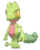
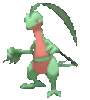
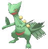
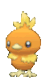
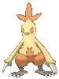
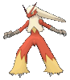
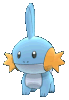
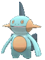
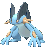
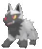

-
Treecko #252
 Grama As solas dos pés estão cobertas por incontáveis espinhos minúsculos, permitindo-lhe caminhar sobre paredes e tetos..
-
Grovyle #253
 Grama Ele vive em florestas densas. Ao aproximar-se de sua presa, ele pula de galho em galho.
-
Sceptile #254
 Grama As folhas que crescem em seus braços podem cortar árvores grossas. É sem igual em combate na selva.
-
Torchic #255
 Fogo Ele tem um saco de chamas dentro de sua barriga que queima eternamente. Parece quente, se for abraçado.
-
Combusken #256
 Fogo Lutador Durante uma batalha, a chama quente em seu corpo aumenta. Seus chutes têm notável poder destrutivo.
-
Blaziken #257
 Fogo Lutador Chamas jorram dos pulsos, envolvendo os nós dos dedos. Seus socos queimam seus inimigos.
-
Mudkip #258
 Água Para alertá-lo, a barbatana na cabeça detecta o fluxo da água. Ele tem força para levantar pedras.
-
Marshtomp #259
 Água Terra Viver em terreno lamacento e com péssimos pés tornou as pernas resistentes.
-
Swampert #260
 Água Terra Pode nadar enquanto reboca um navio grande. Ele derruba os inimigos com um único movimento de seus braços grossos.
-
Poochyena #261
 Sombrio Um Pokémon de natureza persistente, persegue a presa escolhida até que a presa fique exausta.